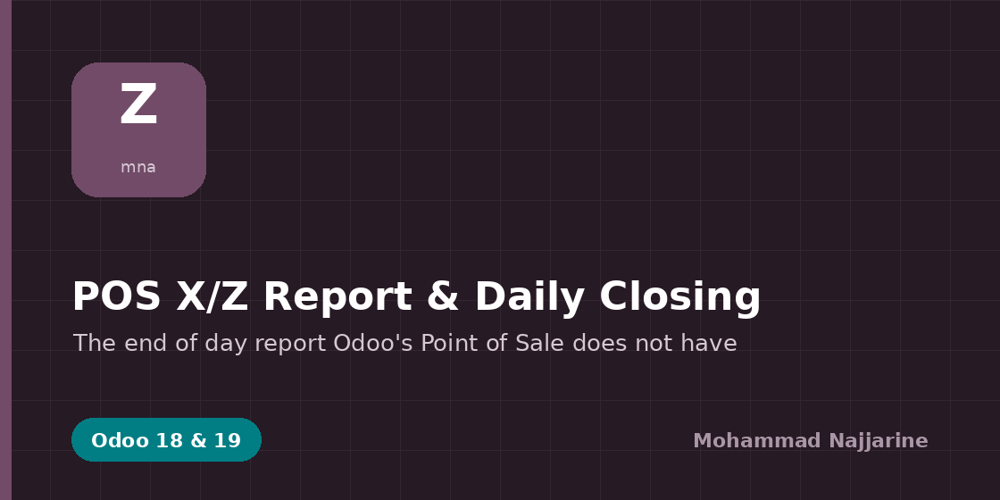
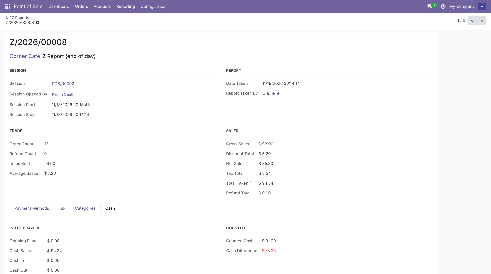
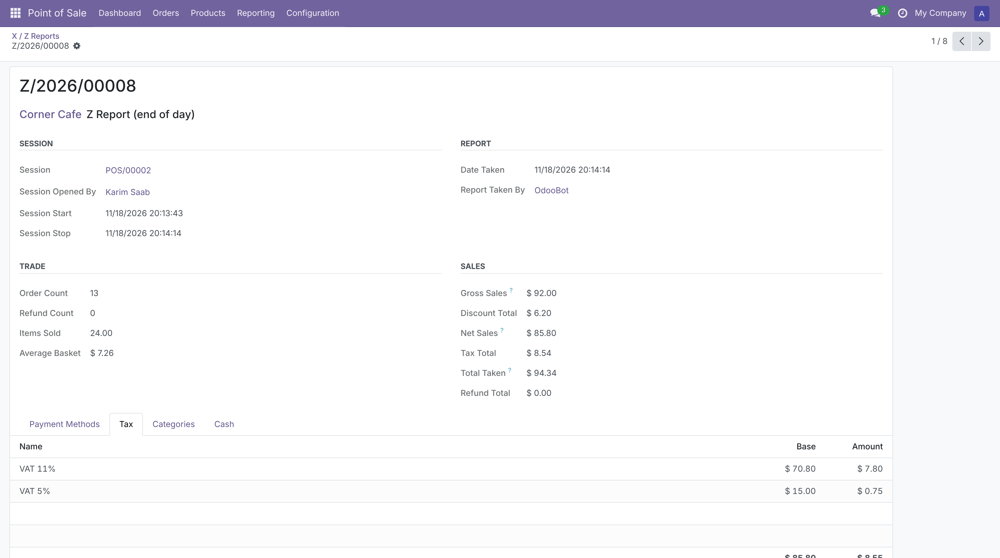
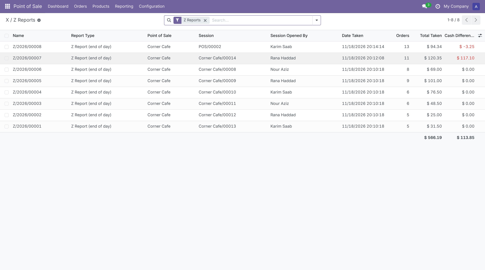
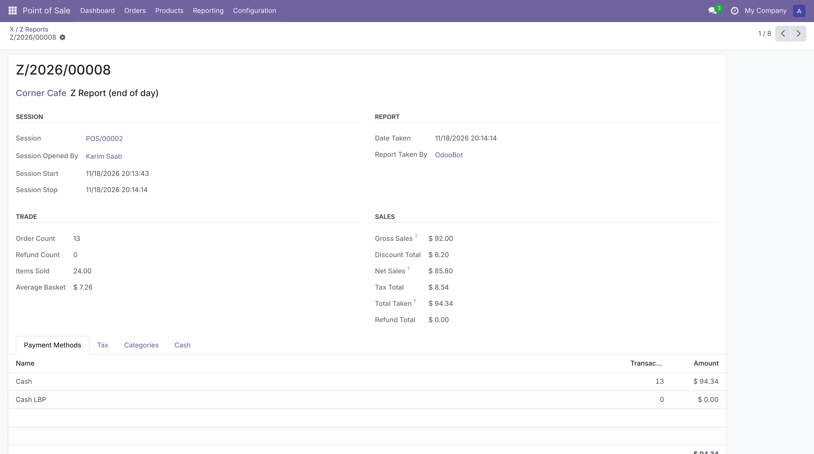

Ask an Odoo Point of Sale for the end of day report and there is nothing to print. In a good many countries that report is the document an inspector asks for, and everywhere else it is what the owner reads before deciding whether the till balanced.
This adds both reports a till needs: an X you can take any time while trading, and a Z that closes the day, numbered and kept.
Orders, refunds, items sold and the average basket.
Gross, discount given, net, tax and the total taken.
A line each, including the ones nobody used.
Base and tax per rate, computed the way the order itself was.
What each part of the menu brought in.
Opening float, cash taken, money in and out, expected, counted, difference.
Numbered in an unbroken sequence and kept exactly as taken. Here the day closed $3.25 short, which is the number the owner wanted.

Two VAT rates with their bases, and a payment method that took nothing still listed at zero.

Filter to the days the cash did not balance, group by shop or by cashier.

It cannot be taken twice for the same session, cannot be edited and cannot be deleted, because a numbered sequence with a hole in it is worse than no sequence at all. You can still add a note.
Take it at a shift change or over a coffee. It is not numbered, and it reports no cash difference, because nothing has been counted yet and a difference there would be noise.
Expected cash and the difference come from the session itself rather than being recomputed, so this report can never contradict the session screen an auditor compares it against. Odoo adds its own statement lines at closing, and counting those as cash movements would report the day's takings twice.
As the gap between list price and what was charged, which is the only definition that survives a line discounted twice or priced by a pricelist.
| Odoo | 18.0 and 19.0, Community or Enterprise |
| Depends on | Point of Sale only |
| A PDF laid out for the file, with signature lines | |
| Tested | 15 automated tests, including that the cash block adds up, that a Z cannot be taken twice, edited or deleted, and that the document renders with its figures on it |
One session, closed and counted: 13 orders, 24 items, a 7.26 average basket. Gross 92.00 less 6.20 of discount is 85.80 net, plus 8.54 of tax is the 94.34 actually taken, and the payment method tab agrees. Every figure on the page is arrived at from the session rather than retyped.

Written and maintained by Mohammad Najjarine, Odoo consultant. Questions, bug reports and customisation requests are answered.
Phone +961 71 835279 WhatsApp +961 71 835279 github.com/najjarinelb